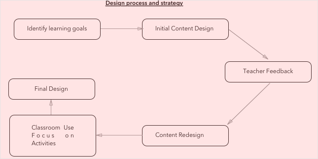

Content strategy at Chalopadho
Challenge
Chalopadho, a startup that provides learning content and analytics to children and teachers in the form of a unique learning management system. It needed to rapidly expand its product capabilities. When I joined Chalopadho as Learning Experience Designer, there wasn’t quite enough design process or collaboration between different teams such as frontend developers, subject researchers and designers. I needed to glue them all together.
My Role and Process
On a small team of content developers and designers, I served a few roles - Gamified the Work process inside out: This was the core idea of the product. I pushed this idea in our work environment. There were bonus points for doing sketching and collaborative work. Inside the work, our content got gamified too. This lead to surprising increase in children engagement and performance.
Designing interactive content:
I collaborated with subject researchers and made them part of whole design process. We used online tools like Canva and Infogram to make infographics. We also designed and developed following design strategy of PHet simulations (which was tailored according to our own needs).
Improved Game Design Process
Many of the subject researchers were struggling to come up with there own game ideas. I made them part of a game. For instance, as a daily routine each one of us had to play a game which is novel. We started playing a game called cryptic hunt on white boards which ultimately realised its true potential in our online platform. Sherlock was another such game which became famous. Student solved mysteries using mathematical theories.
Served as UX Critical Eye
Analyzed prototypes made by web developers and partnered with them to work through features and product concepts. For instance we came up with segment idea that enabled teachers and subject researchers to add their content which could be text, image, video, game, map (360° view) or a simulation (either embedded or created in p5.js or unity.)
Researched Principles for Learning Experience Design
As my interest in interaction design grew, I researched and collaborated with developers to make several enhancements in the learning experience.
- Using relevant graphics and texts.
- Using animations and interactive simulations for physical procedure.
- Breaking complex information into chunks.
- Learning in a real world context.
- Informative Feedback
- Using mind-maps
Outcome
One important result of my working in Chalopadho was better communication with developers and subject researchers and increased collaboration and ideation. Though I am no longer working here now, the culture which we developed there still persists.